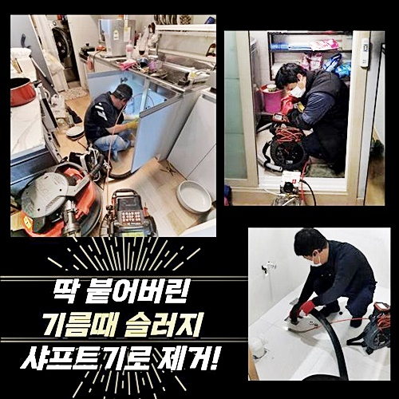
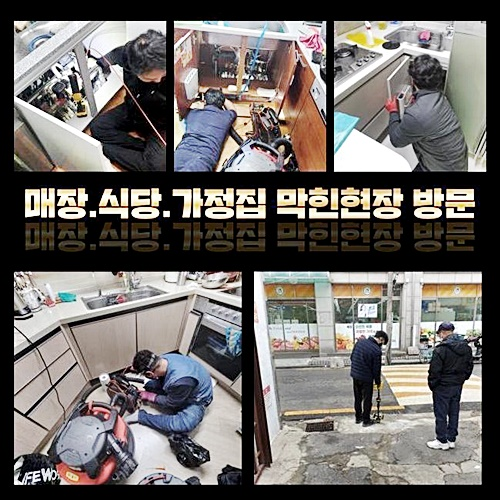
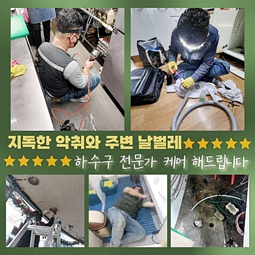
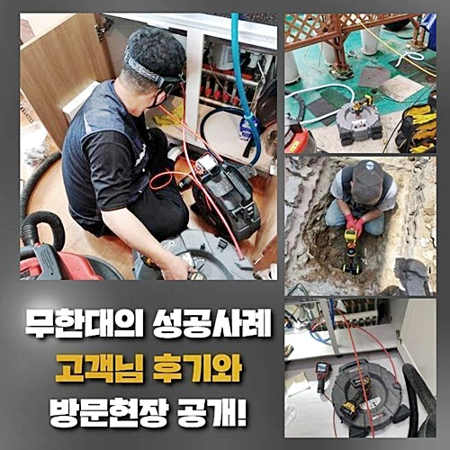
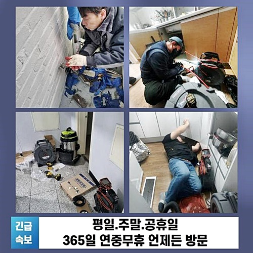
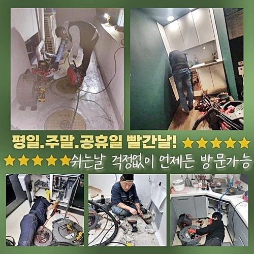
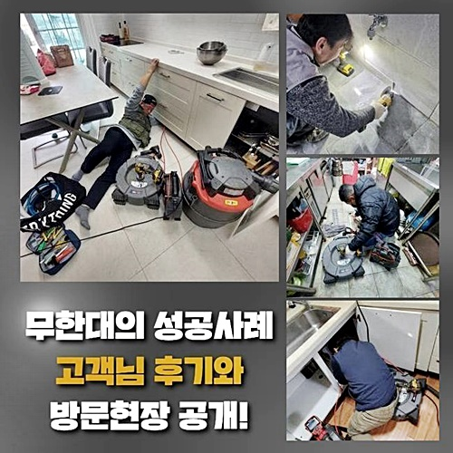

🏠 성남 단대동싱크대막힘 둔전동 고압세척비용 설비출장
용인시 처인구 배관막힘 전문 시공 후기

📋 작업 개요
- 위치: 용인시 처인구, 수원시 영통구, 화성시 동탄
- 서비스 유형: 배관막힘, 고압세척, 내시경점검
- 작업 일시:
- 업체명: 하수구수사대 (010-5615-2118)
🔍 문제 상황
성남 단대동싱크대막힘 둔전동 고압세척비용 설비출장
하수구가 막히는것은 상당하게 발현되고있지만 처리하기어려운 문제중에 하나인데요
싱크대에서는 기름기있는 이물들이 하수구내부에 퇴적되어 빈번하게 발생된답니다
그치만 그럴때마다 전문설비업체를 호출하는게 곤란하다고 셀프적으로 해결하고자 하시는분이 많습니다
잠깐동안의 효과가있겠지만 확실한 원인파악이 불가하기에 옳은방법이라고 말씀드릴수없죠
최근에다녀온 작업사례로 뚫는작업을 살펴보시면 도움이되실거에요
막힘문제가 발발되는 이유를우선 설명해볼게요
설거지를하고난후 기름기와 남은물이 정상적인 상태로 흘러나가지않고 정체되서 발생하는일이 자주있어요
일반적으로 가정집에선 쉽게처리해보고자 높은온도의 물을흘리거나 주위에서 쉽게구하는 클리너제품을 이용해봤지만 뚫리지가않고 도리어 물이솟구치는 현상까지 발발될수가 있답니다
정상적인 배수가되지 않는다고 다급하게 저희들에게 연락주셨죠
현장장소에 방문하여 빨리문제를 점검해보기로 했어요
하수구밑에 이어진 주름호스를 뺀후 하수구내부로 흡입기를 투입해보았어요

🔎 원인 분석
💡 전문가 진단: 정밀 진단 장비를 사용하여 슬러지의 고착 여부를 판명하고 타격/세척 작업을 실시했습니다.
흡입장비가 무엇인지 설명드리자면 가정에있는 청소기처럼 흡입하는 장비라고 생각하시면됩니다
강한힘을 이용해서 이물이나 오수를흡입하여 제거해주는 방식이에요
하수구가 막히는경우는 앞선에 강조드렸듯이 이물로인해 막히게된답니다
그렇기에 빨아들이는 석션기계를 이용하여 오염물질의 정도를 체크해가며 간단한막힘의 정도라면 석션만을통해 해결하고있어요
이번장소는 배관내부쪽에 오랜기간 쌓였기때문에 석회물은 빨아올리지못하고 잔여물만 제거되었어요
이후에는 하수구카메라를 활용해서 안속을 파악해보기로했죠
육안만으로는 살펴볼수없는 하수구안쪽을 파악하려면 배관cctv로 투입해야해요
가끔 내시경장비없이 해결해보려는 경우도있죠
두눈으로 살필수없는곳에 추가현상이 전문기기없이 무리해서 쑤신다면 하수구손상같은 여러의문제들이 발현될수있습니다
눈으로볼수없어 정확하게 원인파악을 할수없어 재발문제가 일어날수있어요
배관카메라를 통해서 꼼꼼하게 들여다보니 예측했던바와같이 많은이물이 누적된상태였죠
물이빠져나갈 상황이 보이지못했고 이로인하여 개수대까지 막힌것으로 추측이가능했죠

🔧 작업 과정
배수구카메라로 내부쪽을 살펴봤으면 드디어 뚫는과정에 들어가는데요
하수구의구조나 설계면에서 증상이나타난것이 아니기에 스케일링과정으로 이루어져야했어요
샤프트기라는 도구를이용해 딱딱해진 기름이물부터 조각해내는 과정들이 필요했습니다
석션기만을 이용하여 제거하기어려운 석회가 발견되었을때 분쇄기기를 활용하여 빨아들일수있도록 석회를잘게 분쇄시키는거예요!
깊은곳에보이는 석회까지 분해가가능하여 필수요소의 장비라고할수있죠
분해과정을 진행한후 석션기로 찌꺼기들과 잔해물들을 전부 제거한답니다
석션통으로 걸려봤더니 상당량의 오염물질들이 제거된것을 확인할수가 있었답니다
앞서하수로 이루어진 이물만 빨아올렸던 모습관달리 확실한 하수구작업으로 오염물제거를 착수한다고 알고계시는것이 좋아요!
이물질만 분쇄한후 석션장비로 제거해내지않을경우 찌꺼기들이 뭉쳐서 크기자체가 커지게되어 작업에 착수할때 다른하수구로 침투하는 경우도있기에 중간마다 석션과정으로 잔해물을 제거해야합니다
뚫어내기위해선 내시경기계와 샤프트기및 석션과정까지 순서대로 진행되야해요
하수구내시경을 써서 원인을우선 파악한뒤에 샤프트로분해 석션도구로는 잔여물질을 흡입한다고 알고계시면되요
오염물로인해서 막혀있는지점이 어디인지체크한후 그범위를 중심적으로 하수구세척에 착수하게됩니다
분쇄를진행한후 잔여물질들은 파이프를통해 석션통에 걸러집니다
배관속에 잔류하지못하게 밖으로 빼내는거랍니다
본래는 슬러지로만 이루어졌지만 찌꺼기와 오물들이 뭉쳐지면서 딱딱하게 되었던것이죠
안전하게 흘러가는하수만 변기에 제거해준뒤 큰이물들은 따로챙겨가서 처리해줘야해요
모든과정들을 마무리하게되면 막혀있던곳에 복귀한후 물을흘려보는 배수검수를 통해 체크해보면됩니다
이전상황과달리 정상적으로 빠지는걸 확인하고서 철수했습니다
오늘글에서는 일반적인 가정에서 하수도막힘이 일어났을때 어떤방법으로 대처하는지 알아보았습니다
혼자만의 방법대로 처리가 불가하다면 염려마시고 연락주셨으면 좋겠습니다


✅ 작업 완료
신속히 내방하여 속시원히 해결해드릴게요
저희업체를 찾아주신다면 신뢰해주심에 보답으로 심혈을기울여 작업해서 성공해내는 결과물로 나타내도록 할게요
어떤곳이든 1시간안으로 내방이가능하고 투명한 작업내용으로 공개하고있어 염려하지않아도 된답니다
문제의증상을 방치하지말고 막힌상태를 발견한그즉시 조치해보는게 알맞은 대책이랍니다
이밖으로도 해소되지않으신게 있을경우 시간관계없이 질문해도되니 연락주시면 친절하게 맞이하도록 해볼테니 안심바래요




⚠️ 하수구 배관 막힘 예방 및 관리 가이드
- ✅ 머리카락, 비닐, 물티슈 등 물에 분해되지 않는 이물질은 절대 흘려보내지 마세요.
- ✅ 기름기 많은 식기는 설거지 전 키친타올로 먼저 기름때를 닦아내세요.
- ✅ 주기적으로 배수구에 뜨거운 물을 가득 부어주어 유지방 고착을 방지하세요.
- ✅ 작업 후 1년 이내 재발 시 무상 A/S 보증 서비스를 제공합니다.
💡 핵심 정리
- 확실한 장비 작업(내시경 점검 및 샤프트 스케일링)으로 원인을 뿌리 뽑습니다.
- 작업 후 1년 이내에 동일한 부위 재발 시 100% 무상 A/S 서비스를 보장합니다.
- 서울 · 경기 · 인천 전 지역에 24시간 언제든 긴급 출동할 수 있도록 항시 대기 중입니다.
❓ 자주 묻는 질문 (FAQ)
🚨 용인시 처인구 배관막힘 문제로 고민이신가요?
정확한 원인 진단과 확실한 시공으로 재발 없는 해결을 약속드립니다.
24시간 긴급 출동 | 서울 · 경기 · 인천 전지역 | 1년 내 재발 시 무상 A/S